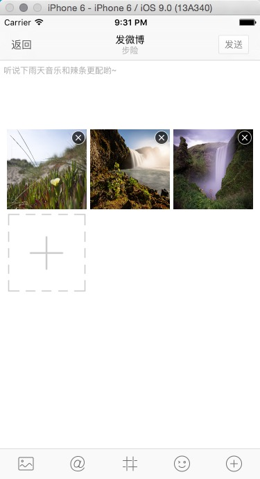
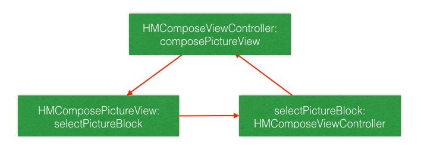

3 种数据类型
public enum UIImagePickerControllerSourceType : Int {
case PhotoLibrary // 图库，包含相册
case Camera // 照相机
case SavedPhotosAlbum // 相册
}
判断照相机是否可用
/// 参数 .Front: 前置摄像头 Rear: 后置摄像头
UIImagePickerController.isCameraDeviceAvailable(.Front)
UIImagePickerController.isSourceTypeAvailable(.PhotoLibrary)
selectedPicture 方法/// 选择照片
private func selectPicture(){
// 先判断图库是否可以使用
if UIImagePickerController.isSourceTypeAvailable(.PhotoLibrary) {
// 初始化控制器并设置代理
let imagePickerController = UIImagePickerController()
// 弹出该控制器
presentViewController(imagePickerController, animated: true, completion: nil)
}
}
selectedPicture 方法case .Picture:
selectPicture()
运行测试：要想获取到用户选择的照片，需要设置
UIImagePickerController的代理
// 调协代理
imagePickerController.delegate = self
// 图片选择完毕
func imagePickerController(picker: UIImagePickerController, didFinishPickingImage image: UIImage, editingInfo: [String : AnyObject]?) {
printLog(image)
}
运行测试：有打印 image 的数据，但是选择图片的控制器并不会消失，原因是只要实现了选择完图片的协议方法，控制器不会自己销毁，需要自己使用代码销毁
// 图片选择完毕
func imagePickerController(picker: UIImagePickerController, didFinishPickingImage image: UIImage, editingInfo: [String : AnyObject]?) {
printLog(image)
picker.dismissViewControllerAnimated(true, completion: nil)
}

分析出可以使用 UICollectionView 实现。
思考：自定此 View 需要向外界提供哪些方法
HMComposePictureView 继承于 UICollectionViewclass HMComposePictureView: UICollectionView {
override init(frame: CGRect, collectionViewLayout layout: UICollectionViewLayout) {
super.init(frame: frame, collectionViewLayout: UICollectionViewFlowLayout())
// 设置随机背景色测试
backgroundColor = RandomColor()
}
required init?(coder aDecoder: NSCoder) {
fatalError("init(coder:) has not been implemented")
}
}
// 懒加载控件
/// 配图控件
private lazy var composePictureView: HMComposePictureView = HMComposePictureView()
...
// 添加控件并设置约束
// 因为配图视图可以跟随 textView 滚动，所以添加到 textView上
textView.addSubview(composePictureView)
composePictureView.snp_makeConstraints { (make) -> Void in
make.top.equalTo(textView.snp_top).offset(100)
make.centerX.equalTo(textView.snp_centerX)
make.width.equalTo(textView.snp_width).offset(-20)
make.height.equalTo(composePictureView.snp_width)
}
运行测试
HMComposePictureView 设置数据源为自己并注册系统的cell// 注册cell
registerClass(UICollectionViewCell.self, forCellWithReuseIdentifier: HMComposePictureViewCellId)
// 设置数据源以及代理
dataSource = self
delegate = self
/// 可重用标识符
private let HMComposePictureViewCellId = "HMComposePictureViewCellId"
extension HMComposePictureView {
func collectionView(collectionView: UICollectionView, numberOfItemsInSection section: Int) -> Int {
return 9
}
func collectionView(collectionView: UICollectionView, cellForItemAtIndexPath indexPath: NSIndexPath) -> UICollectionViewCell {
let cell = collectionView.dequeueReusableCellWithReuseIdentifier(HMComposePictureViewCellId, forIndexPath: indexPath)
cell.backgroundColor = RandomColor()
return cell
}
}
运行测试：遇到问题
HMComposePictureView 的大小来决定的HMComposePictureView 的大小的情况下去设置条目的大小layoutSubViews 方法里面就可以获取到当前控件的大小/// 每一个子条目之间的间距
private let HMComposePictureViewItemMargin: CGFloat = 5
/// 在当前 View 中最多显示几列子条目
private let HMComposePictureViewItemMaxCol = 3
layoutSubViews设置 item 的大小override func layoutSubviews() {
super.layoutSubviews()
// 获取到当前的布局对象
let layout = self.collectionViewLayout as! UICollectionViewFlowLayout
//假设最大列数为3，那么： 条目宽高 ＝ (当前控件宽度 - 2个间距) / 3 列
let itemWH = (self.width - (CGFloat(HMComposePictureViewItemMaxCol - 1) * HMComposePictureViewItemMargin)) / CGFloat(HMComposePictureViewItemMaxCol)
// 设置条目大小
layout.itemSize = CGSizeMake(itemWH, itemWH)
// 设置间距
layout.minimumInteritemSpacing = HMComposePictureViewItemMargin
layout.minimumLineSpacing = HMComposePictureViewItemMargin
}
运行测试
addImage 方法供外界调用，并定义一个集合保存当前添加的image// 懒加载一个集合，保存当前配图视图里面的图片集合
/// 当前控件展示的图片集合
private lazy var images: [UIImage] = [UIImage]()
...
/// 添加图片
func addImage(image: UIImage){
images.append(image)
}
func collectionView(collectionView: UICollectionView, numberOfItemsInSection section: Int) -> Int {
return images.count
}
HMComposeViewController 选择完图片之后调用 addImage 的方法// 图片选择完毕
func imagePickerController(picker: UIImagePickerController, didFinishPickingImage image: UIImage, editingInfo: [String : AnyObject]?) {
// 添加到配图视图中去
composePictureView.addImage(image)
// 销毁掉选择图片的控制器
picker.dismissViewControllerAnimated(true, completion: nil)
}
运行测试
HMComposePictureCell 以显示图片private class HMComposePictureCell: UICollectionViewCell {
// 当前 cell 显示的图片
var image: UIImage? {
didSet{
imageView.image = image
}
}
override init(frame: CGRect) {
super.init(frame: frame)
// 添加控件
contentView.addSubview(imageView)
// 设置约束
imageView.snp_makeConstraints { (make) -> Void in
make.edges.equalTo(contentView.snp_edges)
}
}
required init?(coder aDecoder: NSCoder) {
fatalError("init(coder:) has not been implemented")
}
// MARK: - 懒加载控件
// 显示图片的控件
private lazy var imageView: UIImageView = UIImageView()
}
override init(frame: CGRect, collectionViewLayout layout: UICollectionViewLayout) {
super.init(frame: frame, collectionViewLayout: UICollectionViewFlowLayout())
// 设置随机背景色测试
backgroundColor = RandomColor()
// 注册cell
registerClass(HMComposePictureCell.self, forCellWithReuseIdentifier: HMComposePictureViewCellId)
// 设置数据源
dataSource = self
}
func collectionView(collectionView: UICollectionView, cellForItemAtIndexPath indexPath: NSIndexPath) -> UICollectionViewCell {
let cell = collectionView.dequeueReusableCellWithReuseIdentifier(HMComposePictureViewCellId, forIndexPath: indexPath) as! HMComposePictureCell
// 设置图片
cell.image = images[indexPath.row]
return cell
}
运行测试
/// 删除按钮控件
private lazy var deleteButton: UIButton = {
let button = UIButton()
button.setImage(UIImage(named: "compose_photo_close"), forState: UIControlState.Normal)
return button
}()
// 添加子控件
contentView.addSubview(deleteButton)
// 设置约束
deleteButton.snp_makeConstraints { (make) -> Void in
make.top.equalTo(contentView.snp_top)
make.trailing.equalTo(contentView.snp_trailing)
}
/// 在删除按钮控件懒加载闭包里面添加
button.addTarget(self, action: "deleteButtonClick", forControlEvents: UIControlEvents.TouchUpInside)
HMComposePictureViewprivate protocol HMComposePictureCellDelegate: NSObjectProtocol{
func composePictureCellDidRemove(indexPath: NSIndexPath)
}
@objc private func deleteButtonClick(){
self.delegate?.composePictureCellDidRemove(self.indexPath!)
}
HMComposePictureView 遵循协议，成为 cell 的代理class HMComposePictureView: UICollectionView, UICollectionViewDataSource, UICollectionViewDelegate, HMComposePictureCellDelegate {
...
}
func collectionView(collectionView: UICollectionView, cellForItemAtIndexPath indexPath: NSIndexPath) -> UICollectionViewCell {
let cell = collectionView.dequeueReusableCellWithReuseIdentifier(HMComposePictureViewCellId, forIndexPath: indexPath) as! HMComposePictureCell
cell.image = images[indexPath.row]
cell.indexPath = indexPath
cell.delegate = self
return cell
}
// MARK: - HMComposePictureCellDelegate
private func composePictureCellDidRemove(indexPath: NSIndexPath) {
self.images.removeAtIndex(indexPath.row)
reloadData()
}
运行测试
func collectionView(collectionView: UICollectionView, numberOfItemsInSection section: Int) -> Int {
let count = images.count;
// 如果当前数量为0或者数量为0，则不显示 加号按钮
return count == 0 || count == 9 ? count : count + 1
}
func collectionView(collectionView: UICollectionView, cellForItemAtIndexPath indexPath: NSIndexPath) -> UICollectionViewCell {
let cell = collectionView.dequeueReusableCellWithReuseIdentifier(HMComposePictureViewCellId, forIndexPath: indexPath) as! HMComposePictureCell
// 如果当前的 row + 1 超出 images 的范围，则不取图片
cell.image = indexPath.row + 1 > images.count ? nil : images[indexPath.row]
cell.indexPath = indexPath
cell.delegate = self
return cell
}
// 当前 cell 显示的图片
var image: UIImage? {
didSet{
if image != nil {
imageView.image = image
// highlightedImage 当 imageView 被选中的时候显示的图片
imageView.highlightedImage = nil
// 显示删除按钮
deleteButton.hidden = false
}else {
imageView.image = UIImage(named: "compose_pic_add")
imageView.highlightedImage = UIImage(named: "compose_pic_add_highlighted")
// 隐藏删除按钮
deleteButton.hidden = true
}
}
}
运行测试
func collectionView(collectionView: UICollectionView, didSelectItemAtIndexPath indexPath: NSIndexPath) {
// 取消选中
collectionView.deselectItemAtIndexPath(indexPath, animated: false)
// 当前点击的加号按钮
if indexPath.row == images.count {
// 添加图片
printLog("添加图片")
}
}
HMComposePictureView 中定义点击加号 cell 点击 闭包// 当前 View 内容添加图片所需要的闭包
var selectPictureBlock: (()->())?
func collectionView(collectionView: UICollectionView, didSelectItemAtIndexPath indexPath: NSIndexPath) {
// 取消选中
collectionView.deselectItemAtIndexPath(indexPath, animated: false)
if indexPath.row == images.count {
// 添加图片
printLog("添加图片")
if let block = selectPictureBlock {
block()
}
}
}
HMComposeViewController 中初始化 HMComposePictureView 的时候设置闭包/// 配图控件
private lazy var composePictureView: HMComposePictureView = {
let pictureView = HMComposePictureView()
// 防止循环引用，使用 [weak self]
pictureView.selectPictureBlock = { [weak self] ()->() in
self?.selectPicture()
}
return pictureView
}()
运行测试：注意循环引用。
HMComposeViewController强制引用HMComposePictureView，而HMComposePictureView又强制引用selectPictureBlock，再selectPictureBlock又强制引用HMComposeViewController，所以形成循环引用

/// 所有图片
func allImages() -> [UIImage] {
return images
}
在添加多张图片的时候，内存暴涨，原因就是图片太大，而在实际开发中客户端使用的图片可以不用这么大，所以提供一个按尺寸缩放的图片的方法
UIImage+Extension，添加 scale 方法extension UIImage {
func scaleToWidth(width: CGFloat) -> UIImage {
// 如果当前 image 的宽度小于等于传入宽度，不缩放
if self.size.width <= width {
return self
}
// 通过宽度计算出缩放之后的高度
let height = width / self.size.width * self.size.height
// 核心绘图
// 1.开启上下文
UIGraphicsBeginImageContext(CGSizeMake(width, height))
// 2.在指定区域拉伸绘制
drawInRect(CGRectMake(0, 0, width, height))
// 3.取到图片
let image = UIGraphicsGetImageFromCurrentImageContext()
// 4.关闭上下文
UIGraphicsEndImageContext()
// 返回图片
return image
}
}
HMComposeViewController 中的 didFinishPickingImage 方法中更改代码// 图片选择完毕
func imagePickerController(picker: UIImagePickerController, didFinishPickingImage image: UIImage, editingInfo: [String : AnyObject]?) {
// 添加到配图视图中去
composePictureView.addImage(image.scaleToWidth(300))
// 销毁掉选择图片的控制器
picker.dismissViewControllerAnimated(true, completion: nil)
}
运行测试
HMComposePictureView 的背景色与 textView 一样/// 配图控件
private lazy var composePictureView: HMComposePictureView = {
let pictureView = HMComposePictureView()
pictureView.backgroundColor = self.textView.backgroundColor
// 防止循环引用，使用 [weak self]
pictureView.selectPictureBlock = { [weak self] ()->() in
self?.selectPicture()
}
return pictureView
}()